2 Planning an fMRI study

In this section: experimenter’s decisions
Whole-brain or ROI analysis (or both)
Univariate or multivariate analysis
Blocked or event-related design
Analysis steps
Single-subject - first level - fixed effects analysis (FFX)
Group - second-level - random effects analysis (RFX)
This is equivalent to e.g. conducting many trials per subject to measure reaction time, and then compute a subject-specific mean per condition, after which you would perform the actual statistical inference
Multilevel modelling is also possible (for small datasets), but less frequent.
No matter what you do, your analysis will boil down to these stages.
Research questions
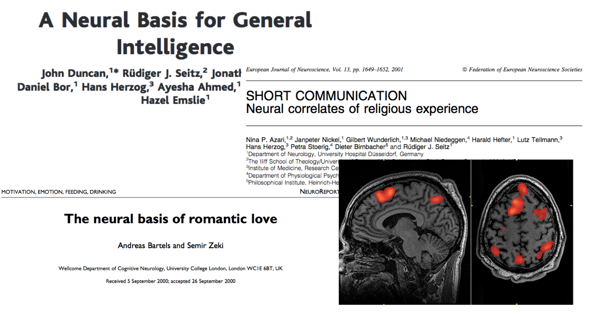
Whole-brain or ROI analysis?
Exploratory: Neural correlates of illusory shapes
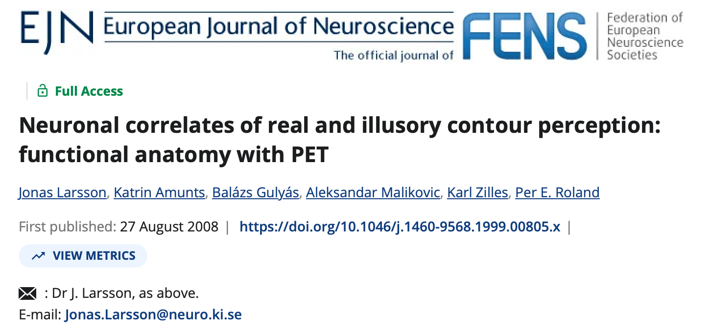
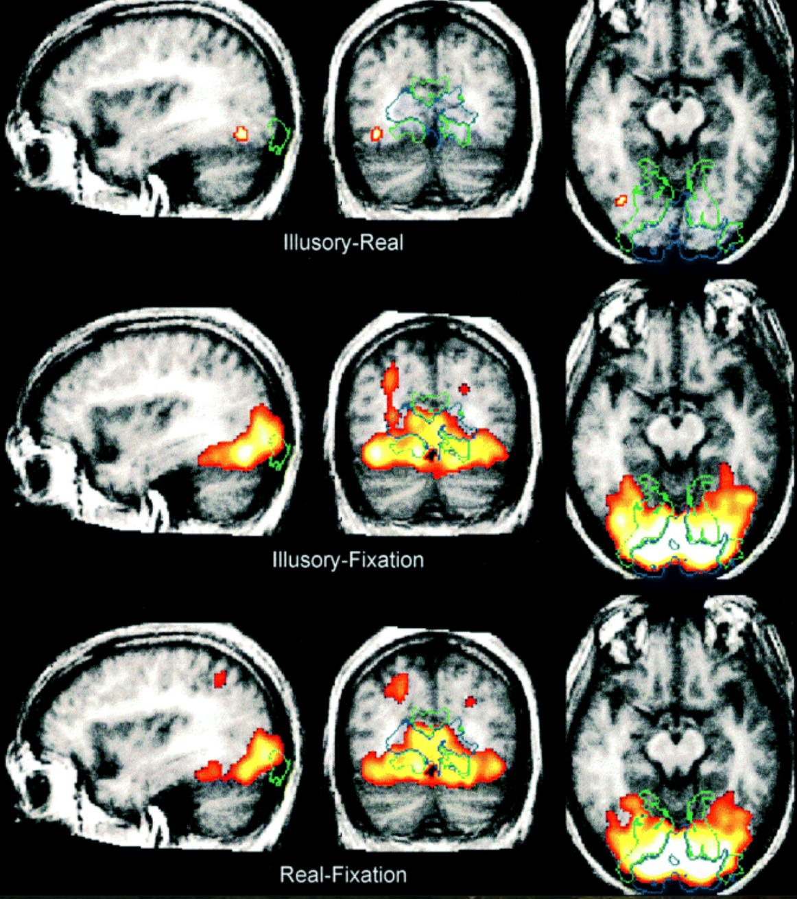
Hypothesis-driven: Are illusory shapes represented in the dorsal visual stream?
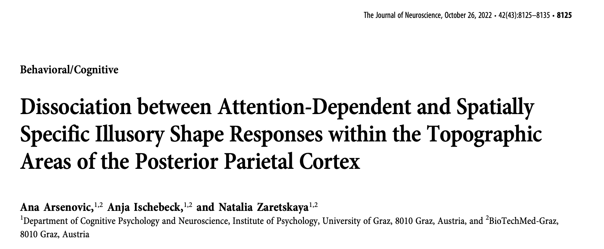
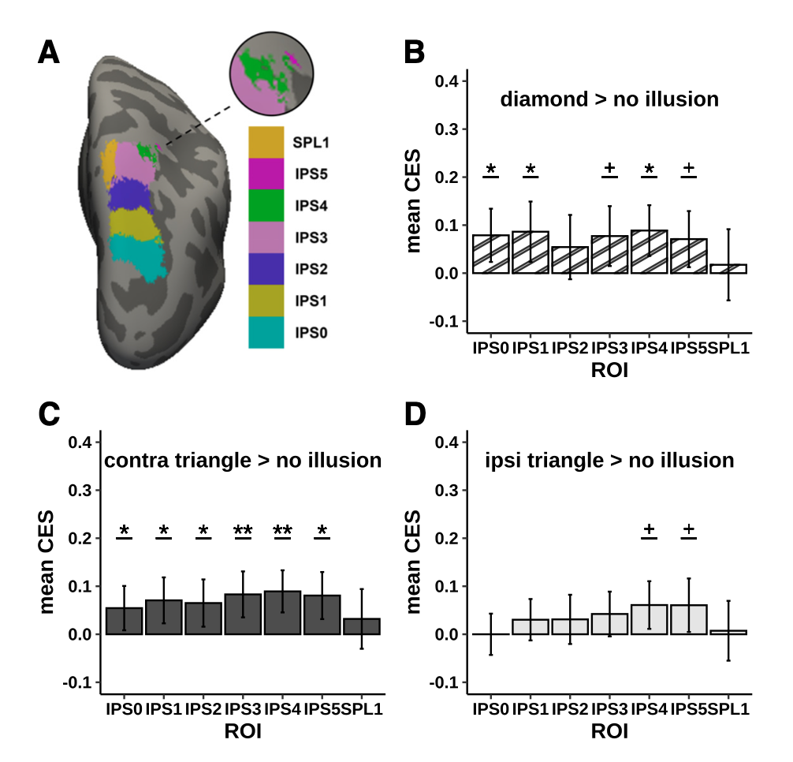
Defining ROIs
Functional localizer scan
Anatomical scan segmentation
Atlas in standard space
Functional localizer scan
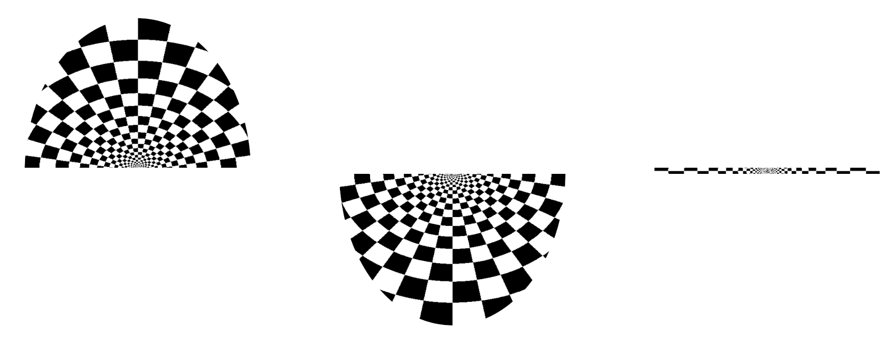
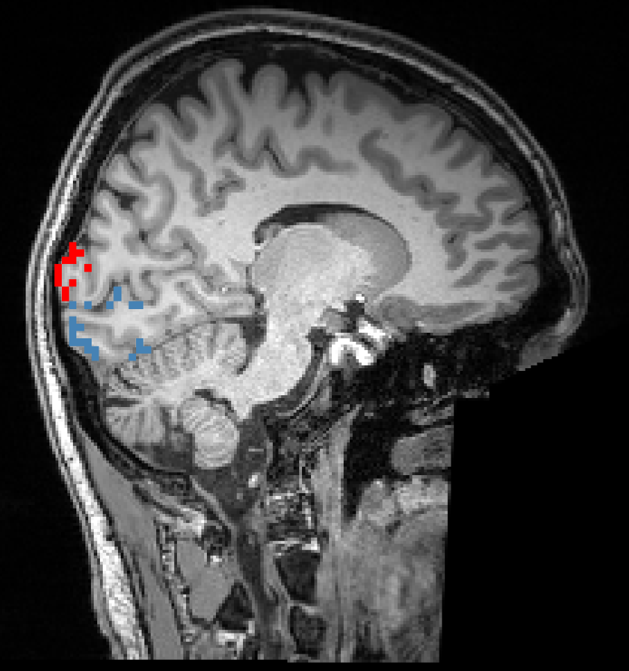
Cortical atlas
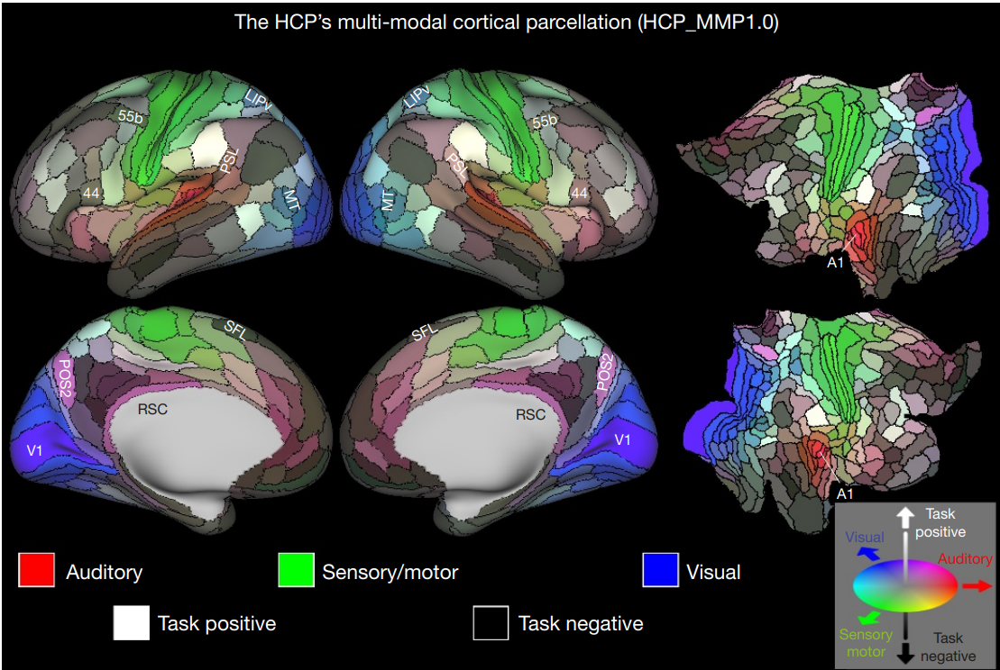
ROI analysis is a way to deal with multiple comparison problem. But it requires an a priory and independent definition of an ROI.
There are two ways to define ROIs:
From an anatomical scan
From an additional (separate) functional experiment
Subcortical ROIs
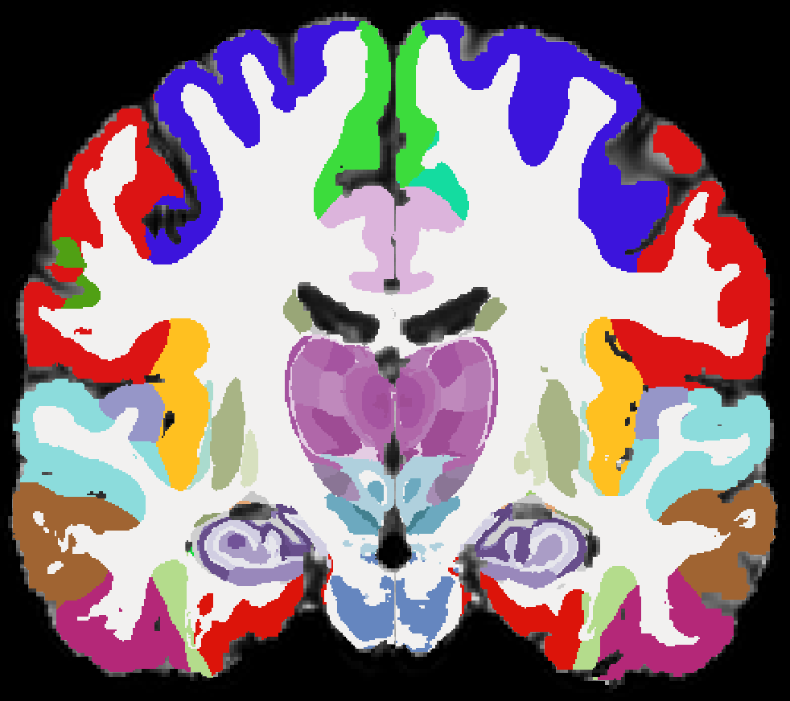
This is the state-of-the-art for anatomically-based ROI definition based on deep learning
Univariate or mutlivariate?
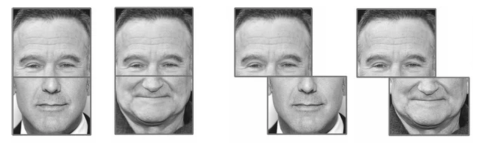
Univariate: Does FFA respond to composite face illusion?
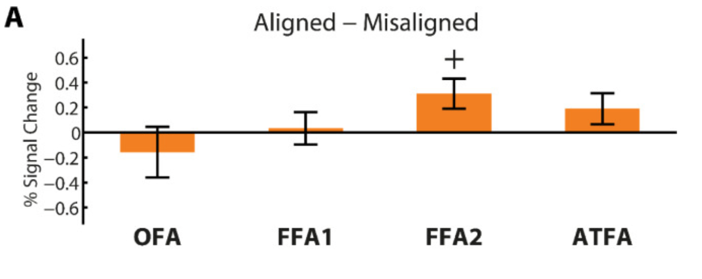
Multivariate: Is early visual cortex representation reflects the composite face illusion?
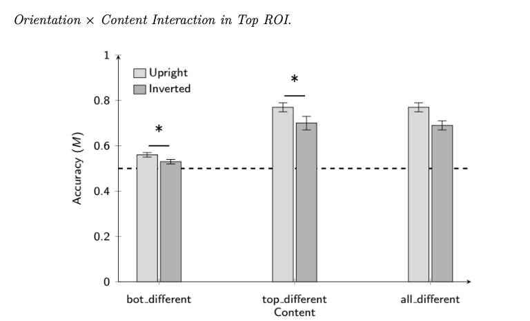